I took the role of Chief Designer to redesign the iOS version of the YYeTs Mobile. Collaborating with the product manager, Liang, I set the goal of redesign by critiquing our previous version and doing user research to dig what the users really need. I also compared our product with other APPs in the market to seek insights. With several iterations, I came up with information architecture, wireframes, and later refined them into high-fidelity interfaces. This new version is expected to be launched in spring 2018.
Duration
2017. 08 - 2017. 10
Methods and Tools
Competitive Analysis, Persona, Information Architecture, Wireframing, Prototyping Sketch, Flinto
Introducing YYeTs Mobile
YYeTs.com(人人影视) is the largest subtitle site in China. It is also a site providing the newest information about films and TV series from overseas, and letting fans share their opinions freely. Founded in 2003, YYeTs has been introducing pop culture and excellent films from overseas to Chinese people, influencing several generations of Chinese fans.
Like the website, the mobile version can feed users with news and critic reviews about the most recent and popular
films and TV dramas. And the mobile app enable users to talk about their beloved videos any time and any where.
If you have interest in overseas film and TV dramas, or want to express your feelings and know others’ comments when you finished a video, YYeTs is for you.
TODAY: highlights of a day
The home page will show you the hottest videos in carousel and what will be released today, as well as the most popular reviews and comments. Greeting you with a picture of today's special topic, YYeTs will never make you feel boring in the world of fantastic movies and TV series.
DETAIL: everything you may need to know
As for each movie or drama, YYeTs provide you with every aspects of information you may need to know: the episode list, the related review articles, the related comments… You can also rate and follow the movie or drama in this page.
COMMENTS: interacting with like-minded people
There is a comment area in every detail page. You can view others’s comments and feel free to write your own comments. You can also reply to others’ comments. You can probably find like-minded users to interact with in this app.
SQUARE: forum
In Square section, the system will feed you the most popular review articles or interesting comments from other uers. You are very welcomed to write your own post ( article, several sentences, pictures, whatever you like as long as it is related to a movie or drama) to express yourself. Other users may like, comment your post and become your fans (follow you).
Research and Analysis
Critique the old version: reveal existing problems
Everyday, there are more than 120K users actively viewing YYeTs.com. However, as for the mobile app, there are only less than 10K users (data from statistic of DAU of the website and the app, provided by Liang). In order to attract more users, I firstly needed to know what went wrong with the current version and why current version couldn’t satisfy users. I critiqued the app from two aspects: interfaces and user flow.
Current UI
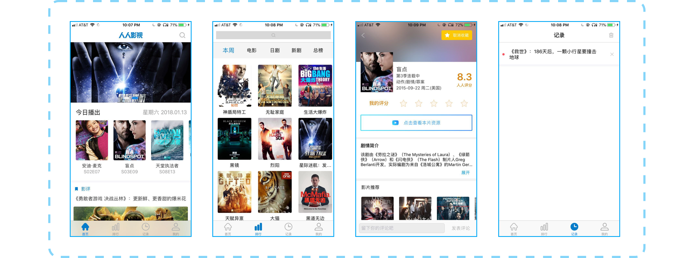
The main shortcomings are:
— Inconsistent use of colors and fonts messes up the information hierachy. The terrible leading space leads to a poor reading experience.
— Some pages are very crowded while others have too much blank space, due to the unreasonable tab structure.
— Interfaces are not well designed and lack aesthetics. The overall style is some kind of withdrawn and boring.
Current User Flow
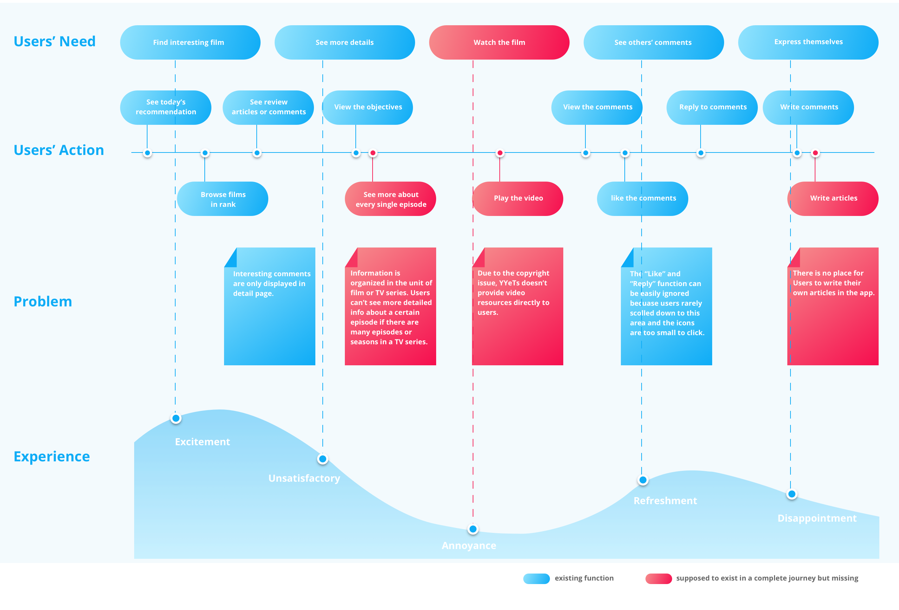
In this map above, several problems of product logic and interactions have been revealed:
— The experience before watching a film and after watching film is totally torn apart. Although sometimes we have to admit that there are many constraints to improve user experience, we still need to find out a solution to make up as much as possible. In this case, the discountinious experience seems inevitable, however, we could at least explain something to our users and help them to complete the whole experience.
— The current information unit is not enough to display all information, we need to consider the case when there are many seasons of episodes in a TV series or many sequels of films.
— The UGC (User generated content) circle is not complete in the app, that users can’t write review articles but can read articles post from the website.
— If the app mean to encourage users to interact with each other, then those social related functions need to be displayed in a more obvious way.
User Research: gather and sort out user needs
In redesign, I decided not only to solve the existing problems but also try to meet more user needs. What else might users do with our app? What were the features they need but we had not provided yet? With these questions in mind, I conducted 8 interviews with our target users. 3 of them were the current users of YYeTs Mobile and 5 of them had accounts on our website but didn’t use the app. ( most participants were my friends and classmates)
In interviews, I learned about their film-watching habits, their use cases with YYeTs website and app( if have), and their information needs. The results indicated that we have two typical types of users: enthusiatic fans and occasional viewers.
Persona
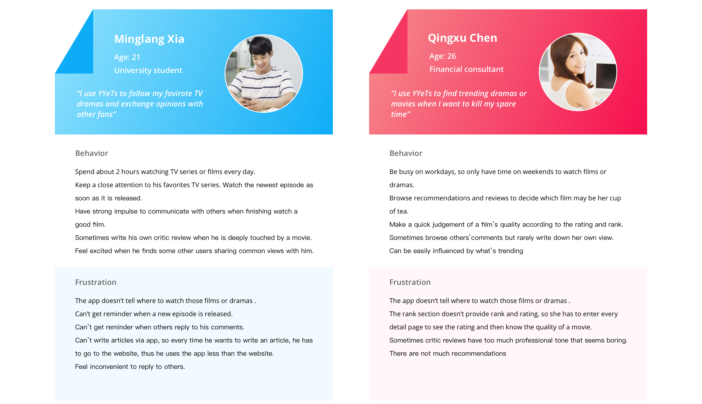
After interviews and making personas, I had deeper understandings about what users expect to do with our app. I generalized users’ behaviors(existing and potential) to two main categories: Receive and Express. And I listed what our app need to improve in these two categories:
Receive
Import more varieties of review contents
Display the rating and rank information in “rank” section
Show video resources ( in other video apps)
Add notification about followed TV series
Express
Provide a more convenient way to socialize with other users
Enable users write their own articles ( hypertext content)
Add notification of others’ replies
Competitive Analysis: learn from others and define our own strength
In user interviews, our users mentions other similar products in their film-related experience. Douban, Dushe Movie, and Movie Base were what I heard most. So I analysed these competitors, in order to learn their strengths and find out how our app could stand out.
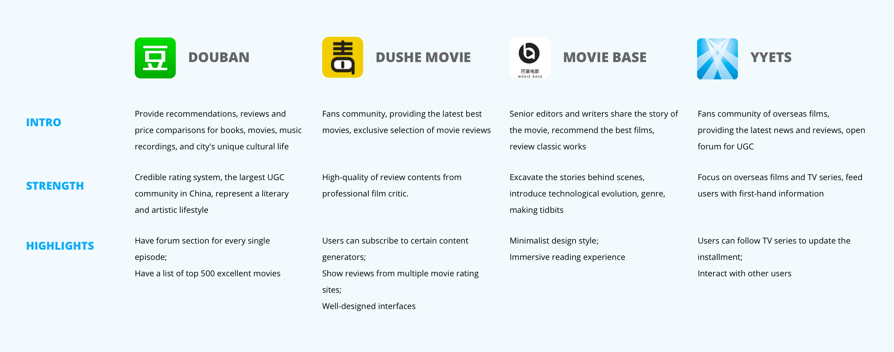
Improvement Space: define the goal of redesign
After research and analysis, Liang and I made a plan about what was going to be improved in the new version. Here are 4 main goals to achieve: 1. Standardize visual elements, making interfaces more visual appealing;
2. Restruct the app, add more space for users’ communication;
3. Highlight the review system, including rating and rank;
4. Enrich the review contents and encourage user generated content.
Design Process
Information Architecture
I started design from re-organizing functions and contents of the app. The most obvious change was that the “History” tab in the previous version was taken place by the “Square” tab, which was a brand new section for social features. And in “Me” section, I added a list of functions to make users better record and manage their activities. The information architecture map is showed below:
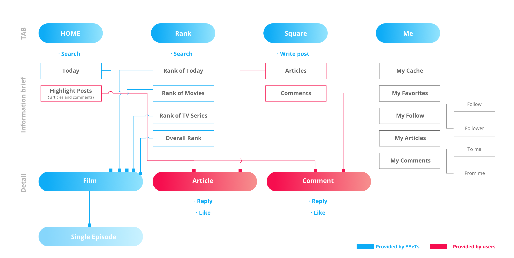
Wireframe
Below is the main Interaction in YYeTs:
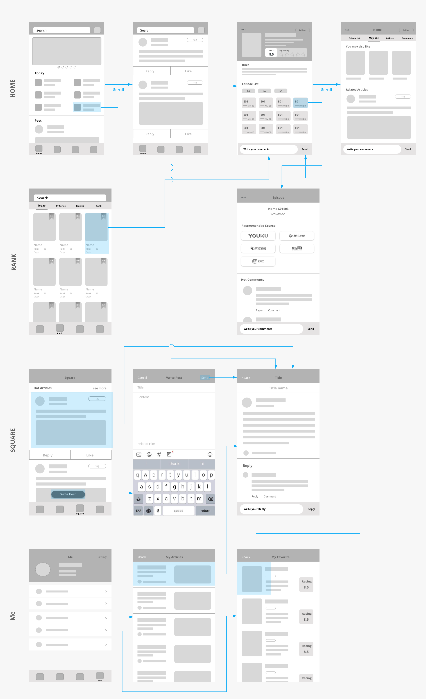
Hi-fi User Interfaces
Take a closer look at what I have improved in the redesign:
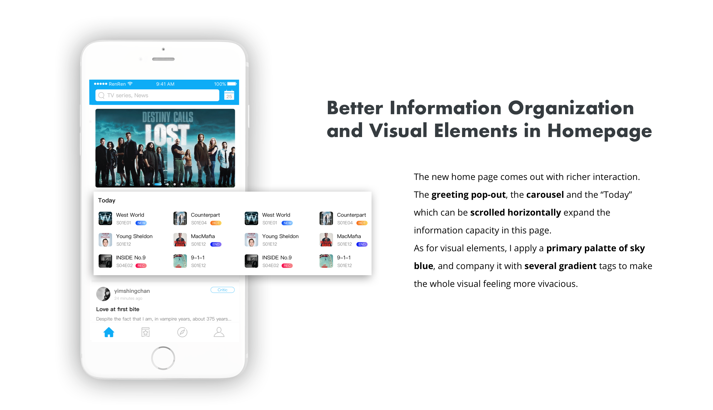
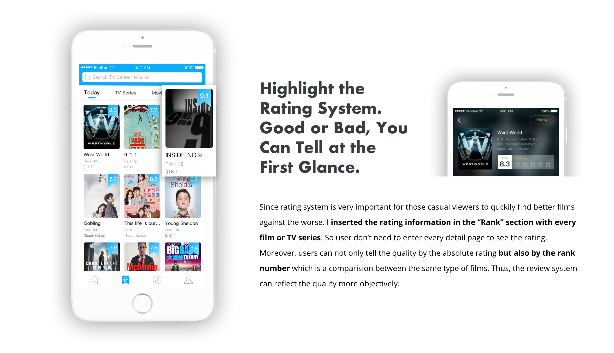
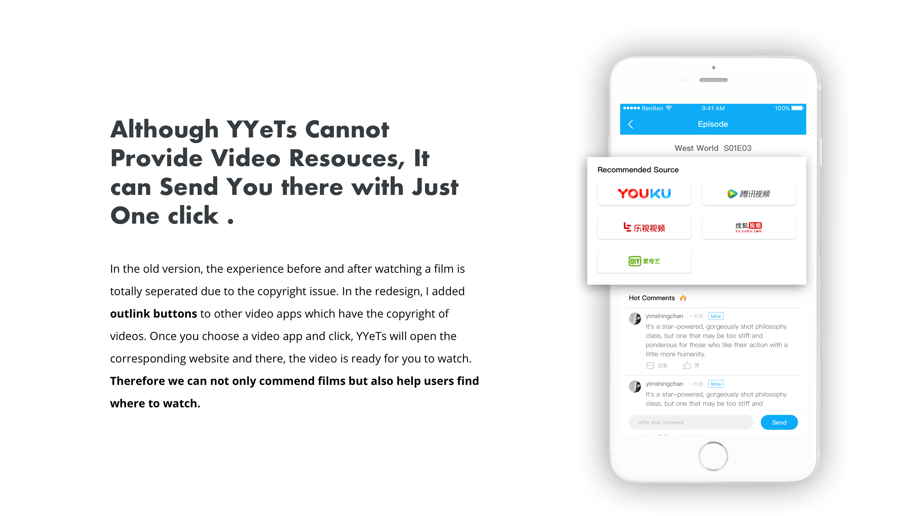
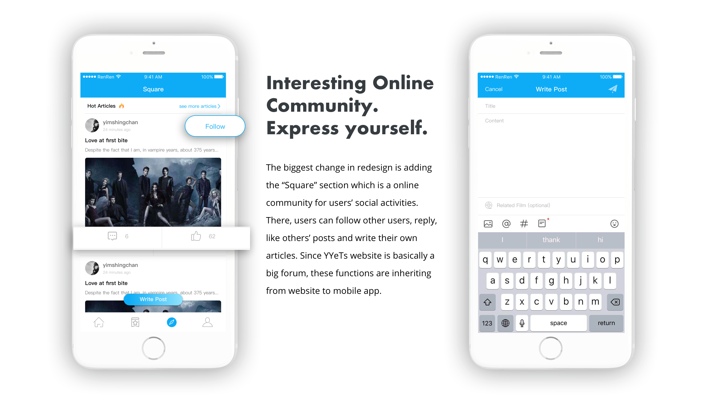
Final UI
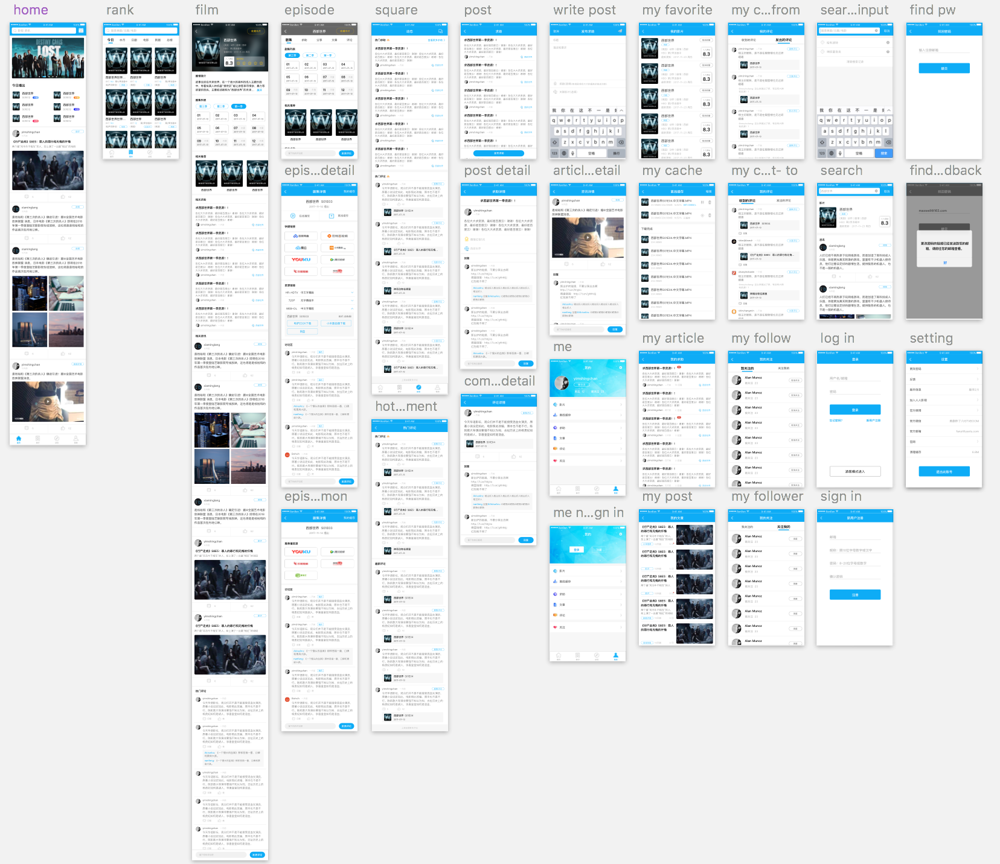
Reflection
Listen to users and other designers
YYeTs Mobile is the very first project I finished as a freelancer.
Since I am the only one who should be reponsible for the user experience, I always remind myself not to make decisions all by myself. Although I am one of the users, but I can't represent all of them. When a designer work alone, he or she should caution away from catering for his or her own taste and preference. And don't design based on assumptions which are not verified. Therefore, in this project, I spent half of the time to do research. I listened to users as many as I can to verify my assumptions. In the design process, I communicated frequently with my product manager to see if my design can solve the problem. And I asked my classmates and former designer colleagues to review my deliveries. In this way, I could ensure I was on the right track. Listening to others can effectively avoid bias. And after the new version is launched, I am planning to do user test to make more improvement.
Learn to work as a UED group
As I said, it was the first time I worked as freelancer. That meaned I need to work as a UX researcher, an interaction designer and a visual designer as well. That was a huge challenge for me at the beginning, because I was not sure whether I could take so many roles at the same time. And as the product is going to be launched, I need to ensure that my design deliveries would not be a waste of time for the development later. You see, in a UED group, the designers and researchers as well as the PM will review each others' work to make sure they are on the right track. The designers will view if the reseachers' findings can be the design direction and the PM and researchers can check if the design could solve the problem. So, I talked to myself in multiple roles and ask why and why: Why you apply this layout, why you have to add this function, etc. And I need to support my design from my research. This was a process with both pain and happiness. And through this struggling time, I can feel that my UX design skill has been improved.